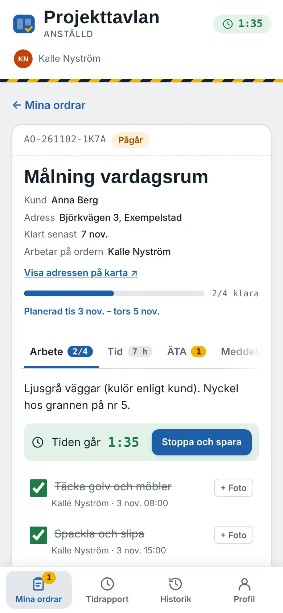
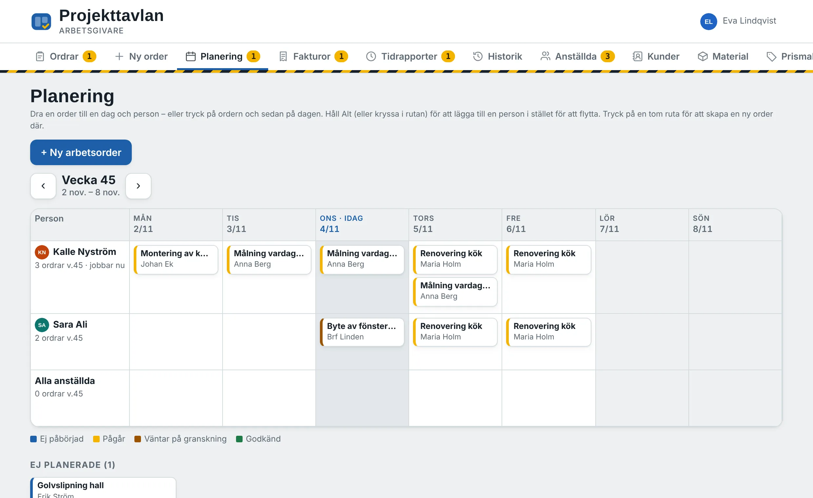
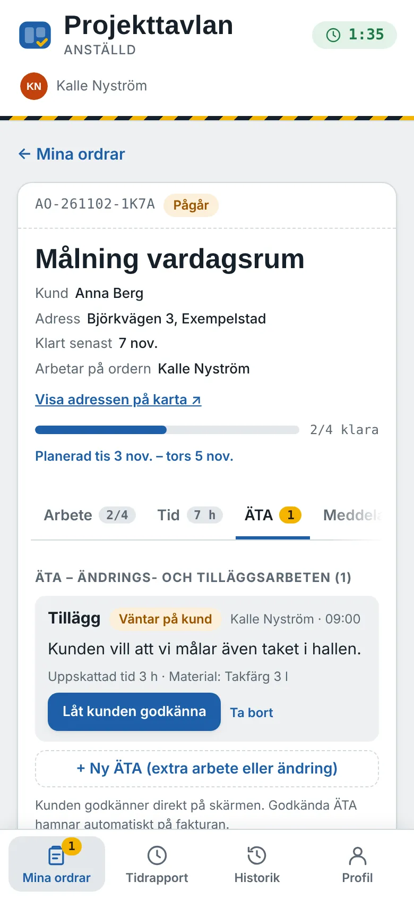
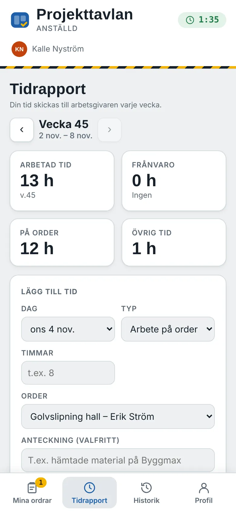
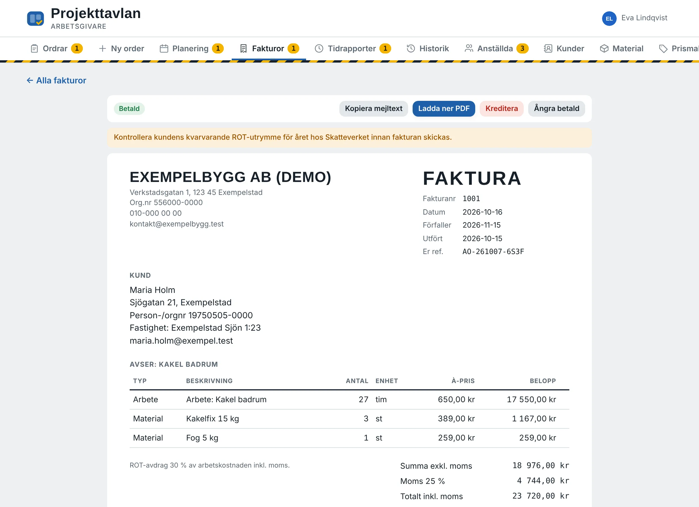

Arbetsordern, tiden och fakturan på samma tavla.
Projekttavlan är för bygg- och hantverksföretag. Du skickar ordern till telefonen, de anställda bockar av och rapporterar tid på plats, och när du har godkänt jobbet är fakturan redan ifylld.
Ingen inloggning. Allt du gör sparas bara i din webbläsare.

Från order till betald faktura
Samma order följer jobbet hela vägen. Ingen skriver av lappar eller jagar timmar i slutet av månaden.
- Skicka ordern
Kund, adress, checklista och vem som ska göra jobbet. Lägg den på en dag i planeringen.
- Jobba på plats
De anställda stämplar in, bockar av, tar foton och låter kunden signera ÄTA direkt i telefonen.
- Granska
Du ser tid, material, foton och avvikelser. Godkänn, eller skicka tillbaka med en kommentar.
- Fakturera
Fakturan fylls i med timmar, material med rätt pris, ÄTA och ROT. Ladda ner som PDF.
Se veckan för hela laget
Planeringen visar vem som är var, dag för dag. Dra en order till en annan dag eller person, eller tryck på en tom ruta för att skapa en ny order där.
Flera anställda kan dela samma order, och du kan lägga till eller ta bort folk mitt i projektet utan att någons tid försvinner.

Byggt för telefonen i fickan
Stora knappar, en sak i taget. Den anställda ser sina ordrar, stämplar in och ut, och skickar veckans tidrapport för attest med ett tryck.
- Stämpelklocka per order
- Foto på varje delmoment
- Avvikelser som syns direkt för dig
- Tid kan rättas tills veckan är inskickad


Fakturan är klar när jobbet är klart
Bara du sätter priser och bara du godkänner. Timmar och material hämtas från ordern, materialet prissätts från ert materialregister och godkända ÄTA läggs till automatiskt.
ROT-avdrag, omvänd moms, kreditfakturor, er logga och export till bokföringen finns med.

Det här ingår också
Det som brukar kräva tre olika program och en pärm.
- ÄTA med kundsignatur
- Kunden godkänner extraarbete med fingret på skärmen. Signaturen följer med till fakturan.
- Kundens slutsignering
- Låt kunden intyga att arbetet är klart innan ni lämnar platsen.
- Kundregister
- Alla ordrar och fakturor per kund, med kontaktuppgifter och anteckningar.
- Materialregister
- Inköps- och kundpris per artikel. Klistra in leverantörens prislista direkt från Excel.
- Tidrapporter för attest
- Veckovis, med frånvaro som sjuk, VAB och semester. Löneunderlag som fil.
- Bjud in med en kod
- Den anställda skriver in en sexteckenskod och är kopplad till företaget.
- Profiler och behörigheter
- Telefon, anhörig och certifikat som ID06 och Heta arbeten, med påminnelse innan de går ut.
- Historik
- Allt som hänt på varje order, vem som gjorde vad och när.
Två sätt att prova
Båda körs direkt i webbläsaren, på datorn eller i telefonen. Byt mellan arbetsgivare och anställda med ett tryck.
Demon
Ett påhittat byggföretag med pågående ordrar, tidrapporter och fakturor. Snabbast om du vill se hur allt hänger ihop.
Öppna demonProvversionen
Börjar tom. Lägg in ditt företag, dina priser och en riktig order och se hur det känns.
Starta provversionen